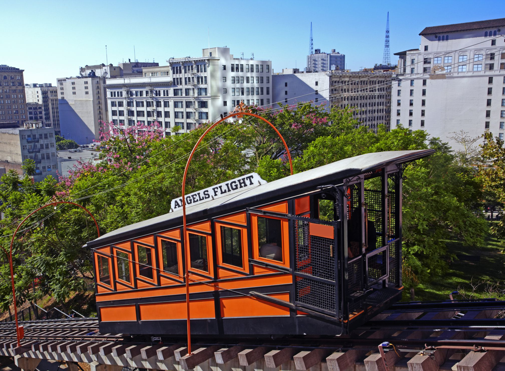
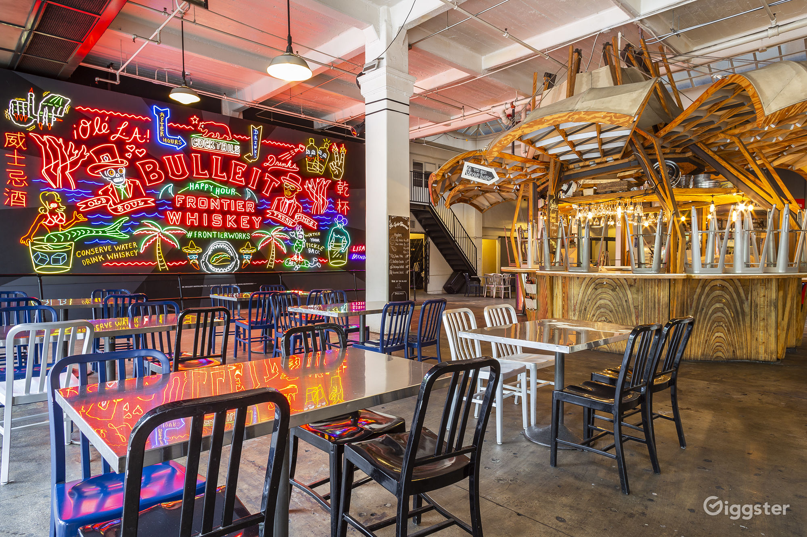
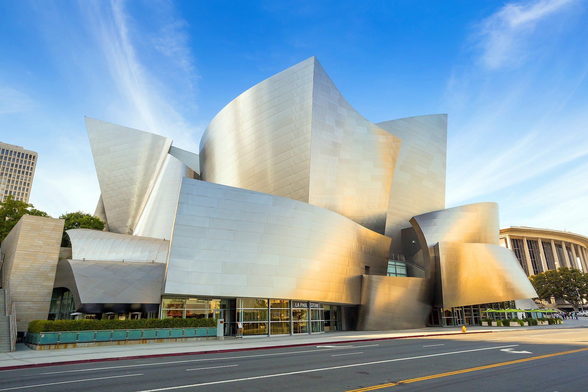

미국에서 뉴욕에 이어 두번째로 인구가 많은 도시인 로스앤젤레스.
한국과의 시차는 16시간 차이이며 (GMT -8) 비행소요시간은 11시간이다.
입국 전 ESTA가 필요하며, 여행목적으로 90일 이하의 단기 체류 시 필요하다.
천사의 도시라고 불리는 로스앤젤레스로 떠나보자!
OFF TO LA
line airplane운항 스케줄 22.04. 대한항공기준
다운타운에서 가장 가까운 곳에 위치한 해안 도시.
산타 모니카 피어 Santa Monica Pier
다양한 상점과 카페, 놀이공원, 수족관이 있는 교각위의 해변명소
베니스 비치 Venice Beach
산타모니카 대표 해변.
에벗키니 Abbot Kinney Blvd
상점, 레스토랑 및 갤러리가 모여 있는 거리
할리우드 & 하이랜드HollyWood & Highland
차이니즈 시어터, 코닥극장, 명예의 거리, 디자이너 매장,
나이트라이프, 레스토랑을 찾아볼 수 있는 관광 지구입니다.
차이니즈 시어터 : 배우, 감독 등 유명인들의 핸드 프린팅이 전시되어 있는 중국양식을 한 건물
코닥극장 : 오스카시상식이 열리는 극장
명예의 거리 : 엔터테인먼트 업계에서 활약한 인물들의 이름이 바닥에 분홍색 별모양과 함께 새겨져 있는 보도
멜로즈에비뉴Melrose Avenue
L.A.에서 가장 명성 높은 거리 중 하나인 이곳은 쇼핑과 다이닝, 엔터테인먼트로 가득한 곳입니다.
이 거리는 베버리 대로 북측과 산타모니카 대로 남측에 걸쳐 있습니다.
멜로즈 애비뉴는 비벌리힐스와 웨스트 할리우드가 만나는 산타모니카 대로에서 시작하며,
고급스러움과 펑키함이 조화를 이루는 장소로도 명성이 높습니다.
그리피스 천문대Griffith Observatory
라라랜드의 배경으로도 유명한 그리피스 천문대.
그리피스 공원의 할리우드 산 끝에서 태평양부터 L.A. 다운타운까지 이르는 전망을 볼 수 있습니다.
그리피스 천문대는 천문학 분야에서 미국을 대표하는 곳으로 유명하며,
여행자와 L.A. 시민들에게 사랑 받는 장소입니다.
엔젤스 플라이트
Angels Flight Railway
1901년에 경사면에 건설된
세계에서 가장 짧은 철도

그랜드 센트럴 마켓
Grand Central Market
1917년부터 운영중인 시장으로
다양한 먹거리를 판매하며 게임, 영화상영 등의 행사가 열리는 곳

월트 디즈니 콘서트홀
Walt Disney Concert Hall
프랭크 게리가 설계한 콘서트홀

BCD tofu house
LA한인타운을 대표하는 음식점
Butcher’s daughter
지역사회의 지속가능성을 지원하는 채식레스토랑
IN and OUT
미국 서부지역에만 있는 햄버거집
URTH cafe
유기농, Non-GMO, 지역농산물을 재료로 하는 카페